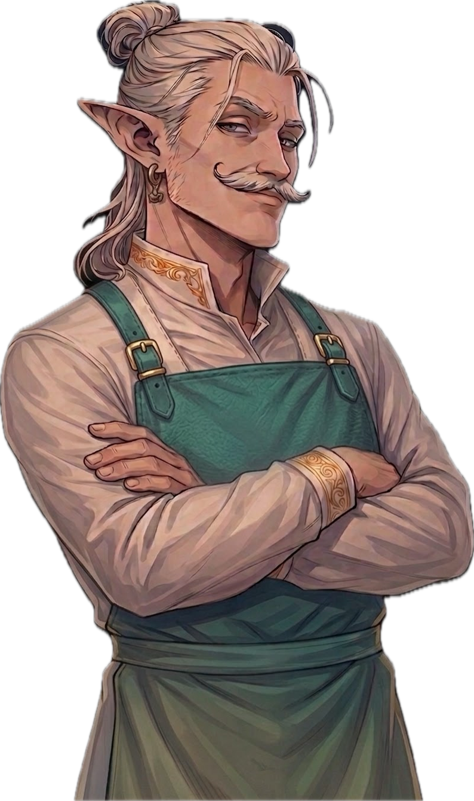
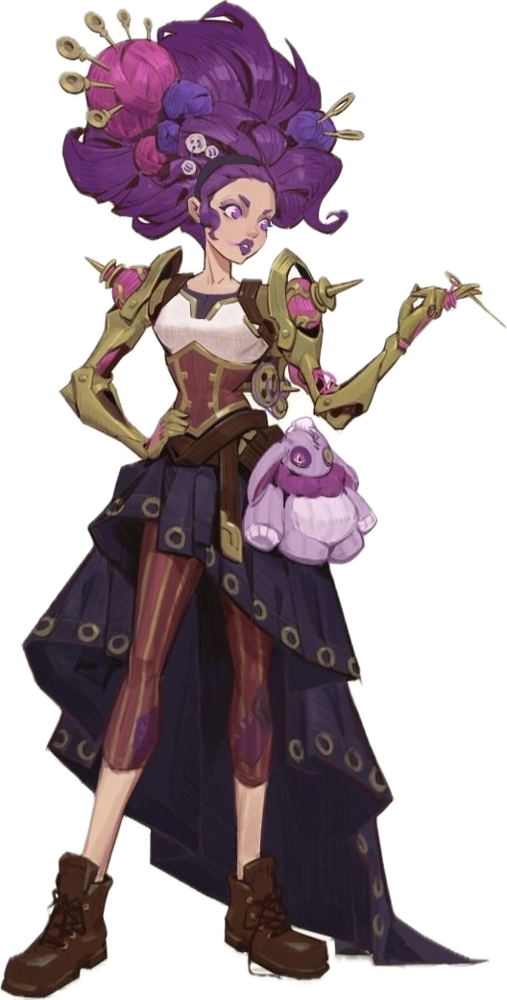
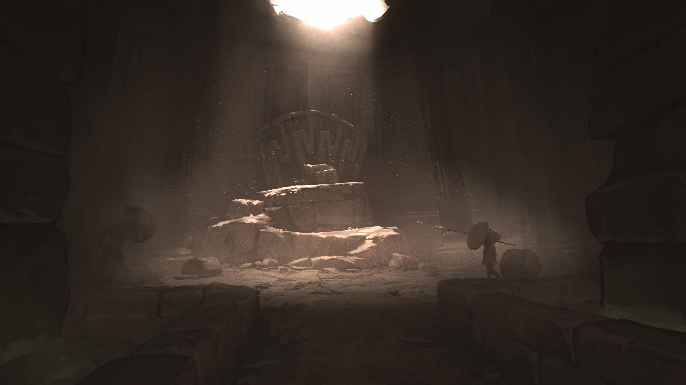

The Statue Heist
An artisan's contest. A stolen legacy. A sleeping horror underneath.
Introduction
Months ago, whilst mapping an island now called SoftEarth, explorers made a remarkable discovery — a magically pliable, marble-like substance that surrenders completely to the intent of whoever handles it. Shape it, leave it undisturbed for a few days, and it hardens to stone with a perfect memory of your vision.
The Horizon Keepers investigated and declared it safe. Now the whole artisanal community of The Drifting Crown is buzzing — bakers, tailors, stoneworkers alike are racing to realise their grandest visions in this extraordinary material.
A contest is underway in the Magister's Market, the artisanal heart of the Crown. The finest statues will be displayed in the Horizon Keepers' Library Courtyard for centuries to come.
This morning… several of the most promising statues have vanished.
DM Info — The Truth
Hidden from PlayersWhatever transported the Drifting Crown to its current location caused earthquakes that cracked the chamber holding Kaldorzen — a primordial earth being, imprisoned long ago. She cannot fully materialise, but she has enough power to act within her chamber. She made a pact with Gorrath IronHand: bring her statues resembling dangerous creatures or weapons as raw material for her stone army, and bring her Tarin StoneChisel — someone capable of sculpting the great dragon that will serve as her vessel once the ritual is complete.
The stone army already inside her chamber was built from the ground up and cannot be moved with anti-gravity — it stays put unless she is freed. Tarin is being forced to sculpt the vessel. If the ritual completes, Kaldorzen transfers her soul into the dragon and escapes.
How to Seal Her
The players must find the sealing scroll in the First Chamber and repeat the oath that originally imprisoned Kaldorzen. The scroll must be read aloud, uninterrupted, for 3 rounds within 30 ft of the tomb. Even moving breaks concentration.
If Gorrath successfully delays the players long enough, the Dragon awakens fully — Kaldorzen transfers her soul into it and escapes. If partially delayed, the dragon awakens weakened. If the players act quickly, they stop the ritual entirely and reseal her.
Why Only Those Statues?
Only statues resembling dangerous creatures or weapons were taken. A sharp player noticing this pattern should be rewarded — it points to intentionality and hints at the nature of Kaldorzen's army.
Hook
The smell of fresh bread, the ring of chisels, the hum of morning conversation — and then screaming. Artisans pour into the square, frantic. Statues are gone. Days of work, vanished overnight.
The Horizon Keepers are unconcerned: "Perhaps statue-eating monsters came over for a midnight snack? Who's to say — we've seen weirder islands come and go. Just handle it."
In reality, only statues resembling dangerous creatures or weapons are missing. A sharp player noticing this pattern should be rewarded — it points to intent, not opportunism.
Tarin StoneChisel has been kidnapped. His big sister Alexandra is desperately asking anyone who will listen to help find him.
NPCs
Responsible for moving SoftEarth stones to the Magister's Market using his Ring of Reverse Gravity for the contest. Corrupted and under Kaldorzen's influence — he stole the statues and kidnapped Tarin.
He returns toward end of day. Once players are on the right track, he hides his ring and claims it was stolen, then offers to help — his real goal is to delay and mislead. If refused, he turns up alone at the mine entrance, still "looking for his ring."
Round 1: Misty Step away, then attack.
Round 2: Hold Person + escape via Fly.
Insight: A successful Intimidation after defeat gets him talking.

One of the finest artisans on the Crown — a sorcerer who works with earth magic to create extraordinary work. Many of his statues decorate the streets and courtyards of town. His big sister Alexandra is desperate for news of him.
Tarin is held in the boss chamber, forced under duress to sculpt Kaldorzen's dragon vessel. He is not corrupted — the moment someone calls to him, he stops.

A tall, slender half-elf with a magnificent white moustache, high cheekbones, and long hair tied in a manbun. His accent is unmistakably foreign. He had a statue in the contest and is furious it is gone.
Arinath-Pierre was working before dawn — he may have heard something unusual before the alarm was raised.

An elegant individual — purple hair in a comically oversized bun, a ball of wool tucked into it on sewing needles. Her corset meets a flowing dress above heeled martens boots. Sharp eyes, sharper memory.
Agnes noticed Gorrath moving things late last night, heading in the wrong direction for normal deliveries. She did not think to raise the alarm at the time.

A half-crocodile beastling with alarming teeth and a habit of hissing mid-sentence. Playful and calculating in equal measure — always eyeing the next deal, always dressed better than expected.
If players are stuck, Crok will suggest a useful scroll or item — at a ridiculous price. A successful Persuasion drops it to a future favour: help him with a problem, free of charge.
Secret: Quietly investigating the secrets of Wysteria.

Merandiel became a lich in pursuit of saving his family — and was tricked. He decided to make something good of his immortal life, and has spent centuries contracted to guard crypts housing dangerous or valuable things.
He casts Zone of Truth and asks the players their intention. Those with honest intentions are allowed to pass. He already knows something is wrong: "The seal has been broken — somehow another entrance has been opened. Kaldorzen must be awake."
Clues & Investigation
Physical Evidence
Near every missing statue: small fragments of stone lying on the ground and along nearby building edges — like something large and heavy grazed the corners while floating.
INT or Survival DC 13 — this debris is not structural. Something carried the statues out, not down. Out of all the workshops, one trail of disturbed dust and faint red dirt leads away from the market toward the bridge to the small new island. That red dirt is distinctive — the loose, soft soil of SoftEarth.
NPC Testimony
Agnes Fasthand — saw Gorrath moving things late the previous night, heading in the wrong direction for normal deliveries. She didn't raise the alarm — he often worked odd hours.
Arinath-Pierre — was in his bakery before dawn and heard a deep grinding sound from the direction of the square. Assumed it was an early delivery.
Alexandra (Tarin's sister) — approaches the players in tears. Tarin never came home last night. His workshop was found with the door open and tools scattered.
The Anti-Gravity Connection
If players ask how heavy statues moved with no tracks — or notice the stone debris — a INT DC 14 or a conversation with Crok surfaces the answer: only Reverse Gravity or an item of that kind could do this. Gorrath was publicly known to use such a ring to move the contest stones.
Once players hit the right track — anti-gravity, the trail, or Tarin's disappearance — Gorrath arrives and inserts himself. He hides his ring, claims it was stolen, and volunteers to help investigate. His goal from this point is to delay, misdirect, and lead them into traps. If confronted with hard evidence, he turns hostile immediately.
Adventure Flow
Outcome Branches
Players expose Gorrath before reaching the boss chamber. Confrontation happens in the field or at the mine entrance. They race to the ritual chamber in time — Tarin can be rescued with room to spare.
Players are successfully delayed and only learn the truth at the boss chamber betrayal. The ritual is already advanced — they must stop it under pressure with Gorrath and the constructs fighting them simultaneously.
Ritual completes but players disrupt the transfer. A weakened dragon awakens — Kaldorzen is partially present, sluggish and imprecise. Harder fight but still winnable. The sealing scroll can still banish her.
Kaldorzen fully transfers into the dragon and escapes. The stone army in the second chamber stirs. A primordial dragon is now loose on the Drifting Crown — a campaign-level problem.
Temple Entrance
As lush, dense vines cover the edge of a cliff in front of you, you make out what look like pillars hidden behind them — old, ancient, nothing like you have seen before. More mine than temple at first glance. But the carvings stop you.
The carvings on the pillars are Primordial — a prayer to an earth elemental. Someone built this deliberately, long ago.
The path after the entrance is more cave than construction, but there is a definite route to follow. You descend deep into the earth — far enough that you begin to doubt there is an end to this place. Completely dark. No dust. The air is perfectly still, and breathing comes easier than it should. There is a calming magical presence the deeper you go.
You reach a dead end in a large cavern and find yourself facing giant double doors, tens of feet high. Frescoes line the walls. At the centre, against the far wall, is a statue of an earth elemental: taking a knee, palms upward, holding something up. Before it sits a small brazier.
Old and cracked but still readable — a story of a great battle ending with the imprisonment of the figure in the central statue. "You surmise you are standing in the entrance to a prison, meant to keep something — or someone — in."
"If time comes when we can't stand guard — the dead shall guard he who has been locked."
The Riddle Puzzle
Lighting the brazier begins the ritual. Four riddles follow in sequence.
Wrong answer: Nothing happens, or 1d6 psychic damage.
Correct answer — harder: Undead spawn as a trial before proceeding to the next riddle.
Correct answer — standard: Proceed directly to the next riddle.
| # | Riddle | Answer | Undead (harder mode) |
|---|---|---|---|
| 1 | "I am taken, not given. I grow heavier when shared. The righteous seek me, the wicked flee me. I am carried so others may stand. What am I?" | Burden / Duty | 1d4+2 Skeletons |
| 2 | "I reveal, yet I do not speak. I burn, yet I do not consume. I blind those who deny me, and guide those who seek me. What am I?" | Light / Truth | 1d4+2 Zombies |
| 3 | "I am given to all, yet earned by few. I may be swift, or I may wait lifetimes. Kings fear me, beggars trust me. I come for all in the end. What am I?" | Judgment / Justice | 1d4 Wights |
| 4 | "I died, yet I remain. I guard, yet I do not live. My soul is bound, my purpose unbroken. I am neither damned nor free. What am I?" | Lich | Merandiel appears |
Merandiel FrostBorn
At the final answer, Merandiel FrostBorn materialises. He is calm and deliberate. He casts Zone of Truth and asks the party their purpose. Those with honest, good intentions are allowed to pass.
"The seal has been broken. Somehow another entrance has been opened. Kaldorzen must be awake — you must move quickly."
If asked about the sealing ritual, Merandiel knows where the scroll is and can point them toward the First Chamber.
Chamber 1 — The Oath Room
With an almost deafening sound, the giant stone wall lowers into the floor. Dust stirs — you cover your faces. When it settles, a small chamber opens before you, perhaps the size of the entrance hall, with an open arch leading into a much larger and completely dark space beyond.
This room is illuminated. A golden, soft glow emanates from the eyes of six statues on small pedestals — all of them pointing their swords inward toward the centre of the room.
A Paladin — or a Religion DC 12 — recognises this as an oath ritual. Six figures taking a vow. But the central paladin holds his sword horizontally, which is highly unusual. Something is written on the blade.
"To those who fight for those who can't — tell me your oath and my sword shall yield."
When a Paladin (or any player) speaks their oath aloud, a stone door grinds open in the wall — revealing a small hidden chamber.
The Hidden Room
Inside: magic items laid out on stone tables, some recognisable from the entrance frescoes. And a scroll — the sealing instructions for Kaldorzen's prison.
Must be read aloud, uninterrupted, for 3 rounds within 30 ft of the tomb. Focusing on the reading is difficult enough that even moving breaks concentration. This needs to happen in the middle of the boss fight — plan ahead.
Chamber 2 — The Army
This chamber is completely dark — other than the faintest source of light at the very far end. Does anyone have a light source?
This gigantic hall — tens of feet tall — is filled with pedestals. Tens. Hundreds. Giant pillar-like pedestals, each holding a statue. You look closer. Their arms, their torsos — these are not humanoid. They are not wearing armour. You realise: these are earth elementals. Primordial warriors, many enough to threaten cities. Perhaps kingdoms.
They are not moving.
Nothing attacks here. The army is dormant and cannot be animated until Kaldorzen has a vessel. Let the players feel the scale of what is at stake if they fail. Give them a moment before pushing them toward the light at the far end.
Boss Chamber

The light grows as you push through. At the centre of a vast stone chamber — a stone Minotaur, a stone Owlbear, and a man on his knees working feverishly, hands deep in soft stone. He is sculpting something enormous. A dragon. And it is nearly finished.
Whether Gorrath was with the party or arrived separately — here, he reveals himself. "Are you done?" He attacks from behind. The Minotaur and Owlbear animate.
The clock starts: Kaldorzen needs 1d4 rounds to complete the soul transfer once the sculpting is finished. Tarin is roughly 1 round away from finishing when the players arrive — unless they got here early.
Combatants
Owlbear — 57 HP. Leaps up to 40 ft: DEX DC 15 or be knocked prone and take full damage in a 10 ft radius. Half damage on success.
Minotaur — Charges recklessly when moving at least 10 ft for bonus damage. Slams its waraxe into the ground — triggers the Eruption battlefield action (2d8, DEX DC 16).
Young White Dragon — Awakens only if the ritual completes. Replace cold flavour with earth: breath becomes a stone pillar eruption, cold damage becomes bludgeoning. Fully awakened = Kaldorzen in full control. Weakened = sluggish and imprecise.
Gorrath — Mage + Hold Person. Prioritises locking down the scroll-reader. Uses Misty Step and Fly to stay out of melee.
Tarin
Tarin is not hostile. He is under duress, not corrupted. If the players reach him and call out, he stops sculpting immediately. Pulling him away from the sculpture — or simply getting his attention — stops the dragon from being completed.
Defeat Gorrath, stop the ritual (disrupt Tarin or read the sealing scroll for 3 uninterrupted rounds within 30 ft of the tomb), and the dragon never awakens. Kaldorzen is resealed. The stone army returns to dormancy.
Magic Items
Found in the hidden room off the First Chamber, laid out on stone tables. Some are recognisable from the entrance frescoes.
| d10 | Item | Effect | Charges |
|---|---|---|---|
| 1 | Spear of the Shattered Sky | Throw → lightning storm (15 ft radius, 4d8 lightning, DEX save). Fail: knocked prone. Spear reforms in hand. | 1 use |
| 2 | Orb of Volcanic Ruin | Throw → lava burst (20 ft radius, 5d6 fire + difficult terrain for 1 round). | 1 use |
| 3 | Cape of Elusion | Reaction when an attacker you can see hits you — halve the damage. | 1 use |
| 4 | Stonebreaker Maul | +1 maul. On hit, +2d6 force; double damage vs stone constructs. | 3 procs |
| 5 | Ring of Thunder Step | Teleport 90 ft + thunder explosion (3d10 thunder). | 1 use |
| 6 | Potion of Giant Strength (Hill) | STR becomes 21 for 1 hour. | 1 use |
| 7 | Figurine of the Marble Guardian | Summon a Stone Owlbear ally for 10 minutes. | 1 use |
| 8 | Blade of Echoing Strikes | Once per turn, a spectral echo deals +1d8 damage. | 5 rounds |
| 9 | Gloves of Shaping Earth | Mold Earth at will; once: stone spike line (3d8 damage). | 1 big use |
| 10 | Horn of the War Titan | All allies gain advantage on attacks for 1 round. | 1 use |
Battlefield Actions
Tell Phase — starts at the end of the boss's turn. No damage, just a signal.
Resolution Phase — triggers at the start of the boss's next turn. Players have one full initiative cycle to react.
Eruption (Minotaur)
Stone Pillar Surge (Dragon)
Summoning Circles (Gorrath)
Linked Notes
Notes referenced in this adventure. Click to expand. Hover over any highlighted link in the text to preview.
Monster mage
Mages spend their lives in the study and practice of magic. Good-aligned mages offer counsel to nobles and others in power, while evil mages dwell in isolated sites to perform unspeakable experiments without interference.
Monster minotaur
A minotaur's roar is a savage battle cry that most civilized creatures fear. Born into the mortal realm by demonic rites, minotaurs are savage conquerors and carnivores that live for the hunt. Their brown or black fur is stained with the blood of fallen foes, and they carry the stench of death.
The Beast Within
Most minotaurs are solitary carnivores that roam labyrinthine dungeons, twisting caves, primeval woods, and the maze-like streets and passages of desolate ruins. A minotaur can visualize every route it might take to close the distance to its prey.
The scent of blood, the tearing of flesh, and the cracking of bones spur a minotaur's lust for carnage, overwhelming all thought and reason. In a blood rage, a minotaur charges anything it sees, butting and goring like a battering ram, then chopping the fallen in twain.
Apart from ambushing creatures that wander into its labyrinth, a minotaur cares little for strategy or tactics. Minotaurs seldom organize, they don't respect authority or hierarchy, and they are notoriously difficult to enslave, let alone control.
Cults of the Horned King
Minotaurs are the dark descendants of humanoids transformed by the rituals of cults that reject the oppression of authority by returning to nature. Inductees often mistake these cults for druidic circles or totemic religions whose ceremonies involve entering a labyrinth while wearing a ceremonial animal mask.
Within these bounded environments, cultists hunt, kill, and eat wild beasts, indulging their basest primal urges. In the end, however, sacrificial animals are exchanged for humanoid sacrifice-sometimes an inductee that tried to escape the cult after learning its secrets. These labyrinths become blood-soaked halls of slaughter, echoing to the cultists' savagery.
Unknown to all but their highest-ranking leaders, these mystery cults are creations of the demon lord Baphomet, the Horned King, whose layer of the Abyss is a gigantic labyrinth. Some of his followers are fervent supplicants that plead for strength and power. Others come to the cult seeking a life free from authority's chains-and are liberated of their humanity instead as Baphomet transforms them into the minotaurs that echo his own savage form.
Although they begin as creations of the Horned King, minotaurs can breed true with one another, giving rise to an independent race of Baphomet's savage children in the world.
Monster owlbear
An owlbear's screech echoes through dark valleys and benighted forests, piercing the quiet night to announce the death of its prey. Feathers cover the thick, shaggy coat of its bearlike body, and the limpid pupils of its great round eyes stare furiously from its owlish head.
Deadly Ferocity
The owlbear's reputation for ferocity, aggression, stubbornness, and sheer ill temper makes it one of the most feared predators of the wild. There is little, if anything, that a hungry owlbear fears. Even monsters that outmatch an owlbear in size and strength avoid tangling with it, for this creature cares nothing about a foe's superior strength as it attacks without provocation.
Consummate Predators
An owlbear emerges from its den around sunset and hunts into the darkest hours of the night, hooting or screeching to declare its territory, to search for a mate, or to flush prey into its hunting grounds. These are typically forests familiar to the owlbear, and dense enough to limit its quarry's escape routes.
An owlbear makes its den in a cave or ruin littered with the bones of its prey. It drags partially devoured kills back to its den, storing portions of the carcass among the surrounding rocks, bushes, and trees. The scent of blood and rotting flesh hangs heavy near an owlbear's lair, attracting scavengers and thus luring more prey.
Owlbears hunt alone or in mated pairs. If quarry is plentiful, a family of owlbears might remain together for longer than is required to rear offspring. Otherwise, they part ways as soon as the young are ready to hunt.
Savage Companions
Although they are more intelligent than most animals, owlbears are difficult to tame. However, with enough time, food, and luck, an intelligent creature can train an owlbear to recognize it as a master, making it an unflinching guard or a fast and hardy mount. People of remote frontier settlements have even succeeded at racing owlbears, but spectators bet as often on which owlbear will attack its handler as they do on which will reach the finish line first.
Elven communities encourage owlbears to den beneath their treetop villages, using the beasts as a natural defense during the night. Hobgoblins favor owlbears as war beasts, and hill giants and frost giants sometimes keep owlbears as pets. A starved owlbear might show up in a gladiatorial arena, ruthlessly eviscerating and devouring its foes before a bloodthirsty audience.
Owlbear Origins
Scholars have long debated the origins of the owlbear. The most common theory is that a demented wizard created the first specimen by crossing a giant owl with a bear. However, venerable elves claim to have known these creatures for thousands of years, and some fey insist that owlbears have always existed in the Feywild.
[!quote] A quote from Xarshel Ravenshadow, Gnome Professor of Transmutative Science at Morgrave University > The only good thing about owlbears is that the wizard who created them is probably dead.
Monster young-white-dragon
The smallest, least intelligent, and most animalistic of the chromatic dragons, white dragons dwell in frigid climes, favoring arctic areas or icy mountains. They are vicious, cruel reptiles driven by hunger and greed.
A white dragon has feral eyes, a sleek profile, and a spined crest. The scales of a wyrmling white dragon glisten pure white. As the dragon ages, its sheen disappears and some of its scales begin to darken, so that by the time it is old, it is mottled by patches of pale blue and light gray. This patterning helps the dragon blend into the realms of ice and stone in which it hunts, and to fade from view when it soars across a cloud-filled sky.
Primal and Vengeful
White dragons lack the cunning and tactics of most other dragons. However, their bestial nature makes them the best hunters among all dragonkind, singularly focused on surviving and slaughtering their enemies. A white dragon consumes only food that has been frozen, devouring creatures killed by its breath weapon while they are still stiff and frigid. It encases other kills in ice or buries them in snow near its lair, and finding such a larder is a good indication that a white dragon dwells nearby.
A white dragon also keeps the bodies of its greatest enemies as trophies, freezing corpses where it can look upon them and gloat. The remains of giants, remorhazes, and other dragons are often positioned prominently within a white dragon's lair as warnings to intruders.
Though only moderately intelligent, white dragons have extraordinary memories. They recall every slight and defeat, and have been known to conduct malicious vendettas against creatures that have offended them. This often includes silver dragons, which lair in the same territories as whites. White dragons can speak as all dragons can, but they rarely talk unless moved to do so.
Lone Masters
White dragons avoid all other dragons except whites of the opposite sex. Even then, when white dragons seek each other out as mates, they stay together only long enough to conceive offspring before fleeing into isolation again.
White dragons can't abide rivals near their lairs. As a result, a white dragon attacks other creatures without provocation, viewing such creatures as either too weak or too powerful to live. The only creatures that typically serve a white dragon are intelligent humanoids that demonstrate enough strength to assuage the dragon's wrath, and can put up with sustaining regular losses as a result of its hunger. This includes dragon-worshiping kobolds, which are commonly found in their lairs.
Powerful creatures can sometimes gain a white dragon's obedience through a demonstration of physical or magical might. Frost giants challenge white dragons to prove their own strength and improve their status in their clans, and their cracked bones litter many a white dragon's lair. However, a white dragon defeated by a frost giant often becomes its servant, accepting the mastery of a superior creature in exchange for asserting its own domination over the other creatures that serve or oppose the giant.
Treasure Under Ice
White dragons love the cold sparkle of ice and favor treasure with similar qualities, particularly diamonds. However, in their remote arctic climes, the treasure hoards of white dragons more often contain walrus and mammoth tusk ivory, whale-bone sculptures, figureheads from ships, furs, and magic items seized from overly bold adventurers.
Loose coins and gems are spread across a white dragon's lair, glittering like stars when the light strikes them. Larger treasures and chests are encased in layers of rime created by the white dragon's breath, and held safe beneath layers of transparent ice. The dragon's great strength allows it to easily access its wealth, while lesser creatures must spend hours chipping away or melting the ice to reach the dragon's main hoard.
A white dragon's flawless memory means that it knows how it came to possess every coin, gem, and magic item in its hoard, and it associates each item with a specific victory. White dragons are notoriously difficult to bribe, since any offers of treasure are seen as an insult to their ability to simply slay the creature making the offer and seize the treasure on their own.
A White Dragon's Lair
White dragons lair in icy caves and deep subterranean chambers far from the sun. They favor high mountain vales accessible only by flying, caverns in cliff faces, and labyrinthine ice caves in glaciers. White dragons love vertical heights in their caverns, flying up to the ceiling to latch on like bats or slithering down icy crevasses.
A legendary white dragon's innate magic deepens the cold in the area around its lair. Mountain caverns are fast frozen by the white dragon's presence. A white dragon can often detect intruders by the way the keening wind in its lair changes tone.
A white dragon rests on high ice shelves and cliffs in its lair, the floor around it a treacherous morass of broken ice and stone, hidden pits, and slippery slopes. As foes struggle to move toward it, the dragon flies from perch to perch and destroys them with its freezing breath.
Chromatic Dragons
The black, blue, green, red, and white dragons represent the evil side of dragonkind. Aggressive, gluttonous, and vain, chromatic dragons are dark sages and powerful tyrants feared by all creatures-including each other.
Driven by Greed
Chromatic dragons lust after treasure, and this greed colors their every scheme and plot. They believe that the world's wealth belongs to them by right, and a chromatic dragon seizes that wealth without regard for the humanoids and other creatures that have "stolen" it. With its piles of coins, gleaming gems, and magic items, a dragon's hoard is the stuff of legend. However, chromatic dragons have no interest in commerce, amassing wealth for no other reason than to have it.
Creatures of Ego
Chromatic dragons are united by their sense of superiority, believing themselves the most powerful and worthy of all mortal creatures. When they interact with other creatures, it is only to further their own interests. They believe in their innate right to rule, and this belief is the cornerstone of every chromatic dragon's personality and worldview. Trying to humble a chromatic dragon is like trying to convince the wind to stop blowing. To these creatures, humanoids are animals, fit to serve as prey or beasts of burden, and wholly unworthy of respect.
Dangerous Lairs
A dragon's lair serves as the seat of its power and a vault for its treasure. With its innate toughness and tolerance for severe environmental effects, a dragon selects or builds a lair not for shelter but for defense, favoring multiple entrances and exits, and security for its hoard.
Most chromatic dragon lairs are hidden in dangerous and remote locations to prevent all but the most audacious mortals from reaching them. A black dragon might lair in the heart of a vast swamp, while a red dragon might claim the caldera of an active volcano. In addition to the natural defenses of their lairs, powerful chromatic dragons use magical guardians, traps, and subservient creatures to protect their treasures.
Queen of Evil Dragons
Tiamat the Dragon Queen is the chief deity of evil dragonkind. She dwells on Avernus, the first layer of the Nine Hells. As a lesser god, Tiamat has the power to grant spells to her worshipers, though she is loath to share her power. She epitomizes the avarice of evil dragons, believing that the multiverse and all its treasures will one day be hers and hers alone.
Tiamat is a gigantic dragon whose five heads reflect the forms of the chromatic dragons that worship her-black, blue, green, red, and white. She is a terror on the battlefield, capable of annihilating whole armies with her five breath weapons, her formidable spellcasting, and her fearsome claws.
Tiamat's most hated enemy is Bahamut the Platinum Dragon, with whom she shares control of the faith of dragonkind. She also holds a special enmity for Asmodeus, who long ago stripped her of the rule of Avernus and who continues to curb the Dragon Queen's power.
Dragons
True dragons are winged reptiles of ancient lineage and fearsome power. They are known and feared for their predatory cunning and greed, with the oldest dragons accounted as some of the most powerful creatures in the world. Dragons are also magical creatures whose innate power fuels their dreaded breath weapons and other preternatural abilities.
Many creatures, including wyverns and dragon turtles, have draconic blood. However, true dragons fall into the two broad categories of chromatic and metallic dragons. The black, blue, green, red, and white dragons are selfish, evil, and feared by all. The brass, bronze, copper, gold, and silver dragons are noble, good, and highly respected by the wise.
Though their goals and ideals vary tremendously, all true dragons covet wealth, hoarding mounds of coins and gathering gems, jewels, and magic items. Dragons with large hoards are loath to leave them for long, venturing out of their lairs only to patrol or feed.
True dragons pass through four distinct stages of life, from lowly wyrmlings to ancient dragons, which can live for over a thousand years. In that time, their might can become unrivaled and their hoards can grow beyond price.
**Dragon Age Categories**
| Category | Size | Age Range | |----------|------|-----------| | Wyrmling | Medium | 5 years or less | | Young | Large | 6–100 years | | Adult | Huge | 101–800 years | | Ancient | Gargantuan | 801 years or more | ^dragon-age-categories
NPC Crok Ruthesk